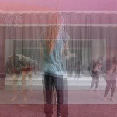
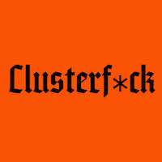

|
Special Effects Festival: Clusterf*ck
January 11-13
This year’s edition of Special Effects Festival asks
How do we build community?
How do we build empathy?
and how do we stay focused and carry each other through this clusterf*ck”.
Artist driven and oriented, Special Effects gathers experimental performance works by practitioners exploring contemporary issues. Drawing on a network of over 7K artists who are part of contemporaryperformance.com the festival samples the diversity and richness of the discipline of performance and presents an open forum for critical thinking on the issues of the day.
They, Themself and Schmerm
Becca Blackwell, Directed by and Developed with Ellie Heyman
January 12 @ 8pm
January 13 @ 2pm
Part classic standup comedy special, part teen zine vomit confessional, They, Themself and Schmerm is Becca’s disturbingly hilarious personal tale of being adopted into a Midwestern religious family, trained to be a girl, molested, and plagued by the question, “How do I become a man and do I even want that?” Becca engages in loving confrontation with the audience, asking what it truly means to be authentic in these meat carcasses.
“It would have taken me two years of focus groups to make being molested that funny.” —Young Jean Lee
Intimatics I-III
by Kate Dakota Kremer, Directed by Philip Gates
January 11 @ 8pm
Intimatics I-III is a series of three movement-plays about intimacy and citizenship. First developed around the time of the 2016 election, the three parts of INTIMATICS (“Match,” “Speak/Box,” and “Threshold”) investigate the ways in which we navigate boundaries and inhabit flawed rule structures while also pursuing new structures of collaboration and social intimacy. Intimatics raises questions about how borders, walls, prisons, laws, and other governmental structures of containment shape the practice of intimacy between individuals and among communities—and how the practice of intimacy might reshape those structures.
Gray Spaces: Clusterf*ck
January 13 @ 8pm
An evening of new works and works-in-progress from the Contemporary Performance network revealing radical experiments in performance. From young makers breaking into and out of the performance scene, this evening event brings together vital forces that are shaping the next frontier of performativity. Existing between the black box of experimental theatre and the white rooms of the art museum, gray spaces explore the marginal zones of performance.
|